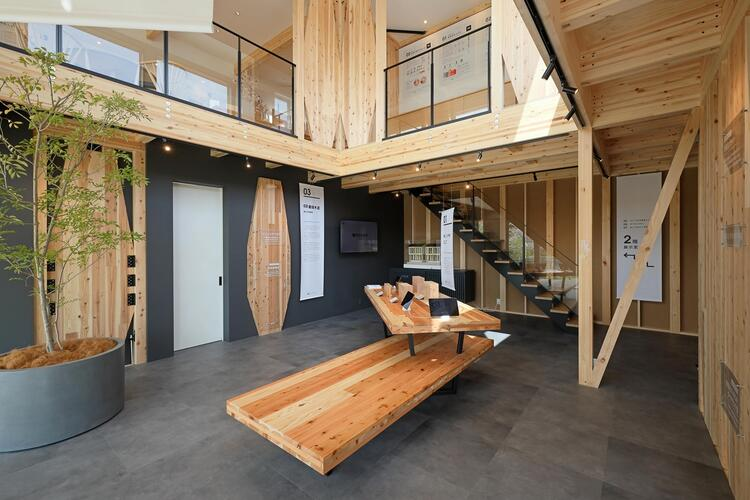
展示場・CLT構造Lab.
「最強木造」の強さを、
見て、触れて、体感。
CLTハイブリッド構法が叶える、
地震に勝ち続けられる家、そして住み続けられる家。
その強さを、展示場と構造Lab.で体感。
SUUMOからの来場予約特典：【特典内容をご記入ください】
CLT HYBRID
史上最強木造が新登場。
それは、強さと自由のハイブリッド。
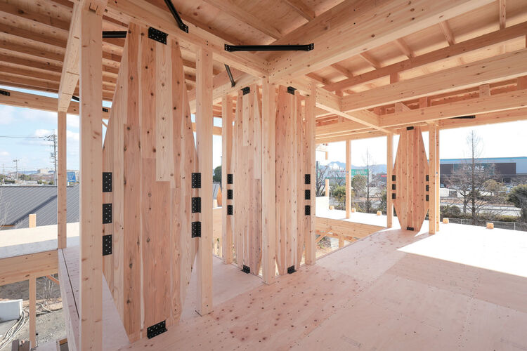
CLTハイブリッド構法とは、木造軸組構法を基準として、従来からある耐力壁に代わり、CLTハイブリッドパネルを耐力壁として組み込んだ、ライフデザイン・カバヤが開発したオリジナルの木造軸組構法です。
CLTパネル工法の強く開放的なメリットはそのままに、木造軸組構法と融合させることで、よりリーズナブルで自由な住まいを実現します。
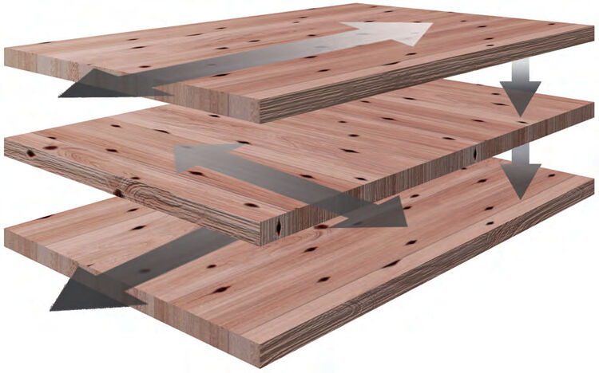
CLT（直交集成板）とは
ひき板（ラミナ）を繊維方向が直交するように積層接着した木質系材料。木材を直角に重ねて接着しているため、収縮変形が抑えられ寸法が安定し、複数方向に対して高い強度を持ちます。欧米では10階を超えるCLT高層ビルも建てられています。
MERIT 01
繰り返す地震にも
70回耐える耐震性を実証。
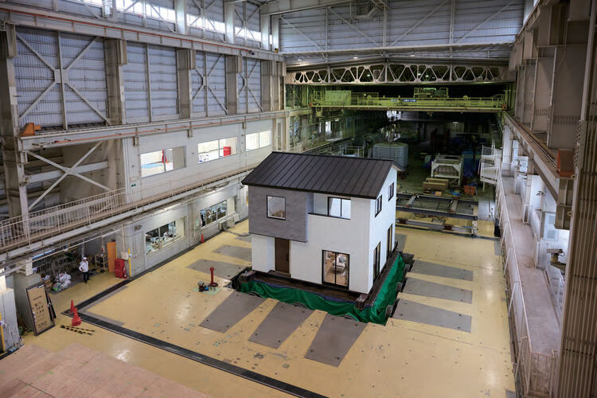
実際の地震波を上下・左右の三次元でそのまま再現する「三次元大型振動台実験」を、国立研究開発法人 土木研究所にて実施（2024年）。縦揺れ・横揺れの実際の地震波（震度5〜7）にも耐え、合計70回の振動に耐えることを実証しました。実験の結果、構造体に大きな損傷はなく、圧倒的な強さを発揮しました。
合計70回
観測史上最大級「東日本大震災」、
「能登半島地震」に耐え、最大5,567gal※をクリア。
※建物2階桁梁部の計測値。galは地震の揺れの大きさを表す加速度の単位。
全棟構造計算対応により
耐震等級3が標準仕様
耐震等級1
建築基準法
一般住宅の耐震性能
耐震等級2
1.25倍の耐震性能
病院や学校等避難所となる建物
耐震等級3
1.5倍の耐震性能
消防署や警察署など防災の拠点
※プランニングによっては耐震等級3の取得が難しい場合があります。※耐震等級3の取得には評価機関への申請及び認定が必要となり、別途費用が発生いたします。
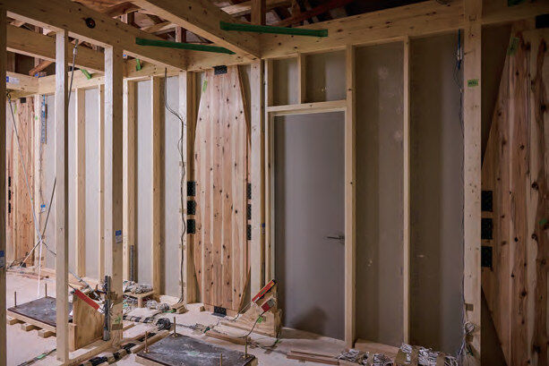
やさしくて剛い壁
ダイヤモンド型のCLTハイブリッドパネルを壁の中に配置することで、従来の壁仕上げのまま高い耐力を実現。構造金物やコンセントなどとの干渉も避けられ、住まいの自由度も高まります。
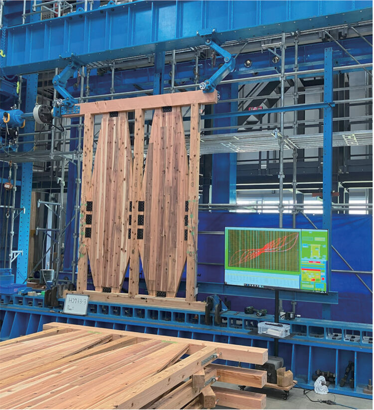
同じ力で押しても、
変形は約2/3
耐力壁の面内せん断試験では、トラック1台分（1.5トン）の荷重で押した場合でも、CLTハイブリッドパネルは筋かいの耐力壁に比べて小さな変形に留まりました。
※自社試験（壁長さ0.91mあたり）
MERIT 02
大地震の後も、
「住み続けられる家」。
地震で倒壊は免れたものの、大きく壊れてしまい住み続けられない家屋も多数あります。
倒壊しないのはもちろん、震災後も住み続けられる家＝財産を守る家であることが大切です。
継続使用可能とされる変位※1
86mm
約1/2
の変形に
CLTハイブリッド構法 最大変位※2
41mm
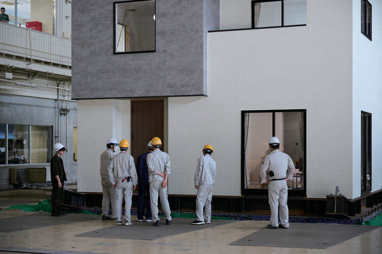
繰り返す余震にも、
小さな変形。
過去に発生した各地震波（震度6〜7）を加振しても、1回目は15mm以下と小さな変形に収まりました。連続5回加振しても35mm以下。余震などによる繰り返しの揺れにも強いことを証明しています。
※1 (一財)日本建築防災協会 応急危険度判定基準（1/30rad）より試算 ※2 70回の実験における実験棟二階床変位の値
MERIT 03
住まいを火災から守る実力は、
耐火実験で証明されています。
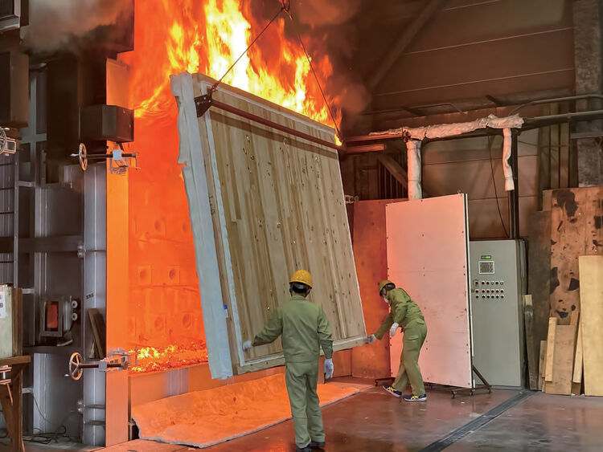
省令準耐火構造の
認証を取得
火災保険料もお得に
省令準耐火構造に認定されると、木造住宅でも「T構造（耐火構造）」に属するものとされ、火災保険を抑えることができます。
1分間に約1mmしか燃えない
燃焼実験の結果、CLTパネルは1分間に1mm程度の速度でしか燃え広がらず、試験終了後もパネルの表層しか燃えない結果となりました。
MERIT 04
耐力壁が少なくて済むから、
自由で開放的な空間に。
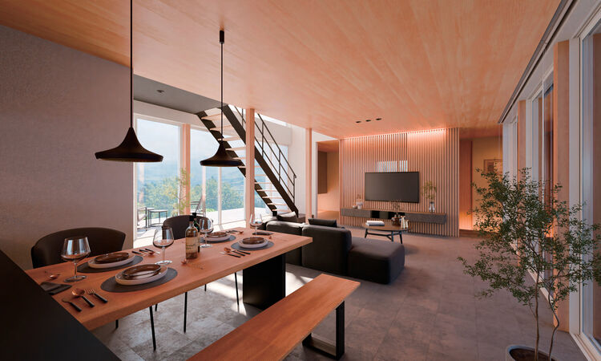
構造体を支える筋かいや耐力壁によって、住まいの開口部は制約を受けてしまいます。
耐力が高いCLTハイブリッドパネルなら、優れた耐震性を確保したまま、
吹き抜けや大きな窓のある自由で開放的な空間を創り出すことができます。
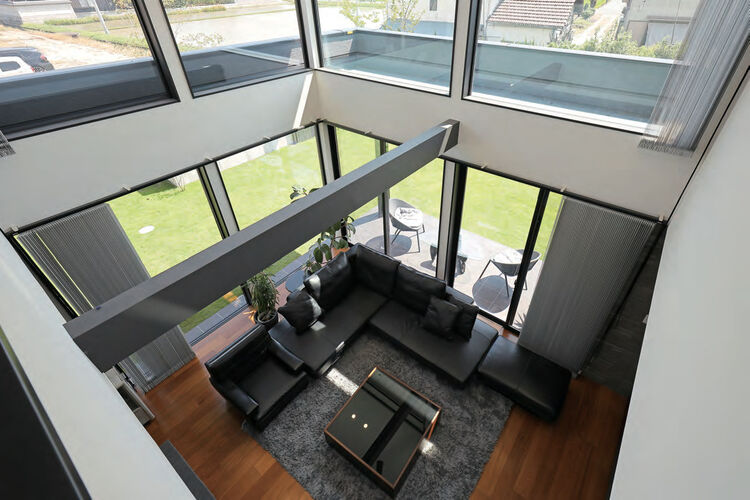
「吹き抜け」という選択肢
建物に囲まれた敷地でも、大きな窓のある吹き抜けで明るく開放的なリビングに。
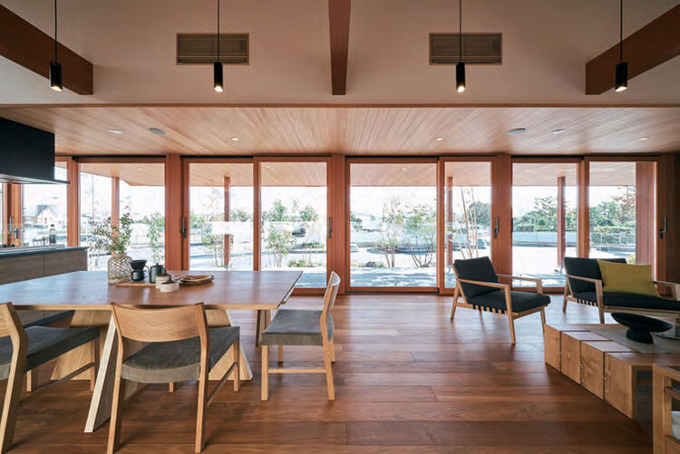
連続開口・コーナー開口
開口部のレイアウトの自由度も高まり、ひろびろ大開口5.46m※の事例も。
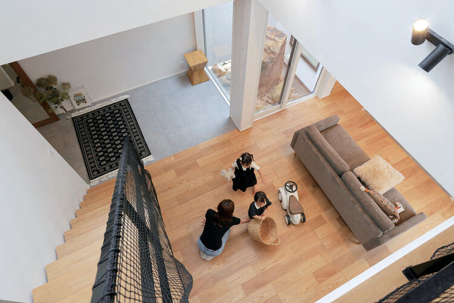
将来の変化にも対応
構造躯体と内装・設備を分けた「スケルトン・インフィル構造」で、家族の変化に合わせて間取りを変えやすく。
※テクニカルガイドブック掲載事例。プランや敷地条件により異なります。
MERIT 05
人にも自然にもやさしい、
木の住まい。
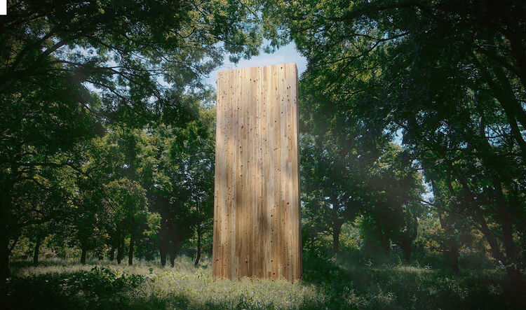
断熱性はコンクリートの約5倍
木は鉄やコンクリートに比べて熱を通しにくく、断熱性はコンクリートの約5倍、鉄の約500倍。冬の寒さや夏の暑さから暮らしを守ります。
炭素を蓄える「第二の森」
CLTハイブリッドパネルの木材使用量は、一般的な筋かいの耐力壁の3.3倍。炭素貯蔵量は2倍となり、環境にやさしい住まいです。
木の香りで、癒やされる
木の香りにはリラックス成分「フィトンチッド」が多く含まれ、木のぬくもりのある見た目や手触りが、あたたかな気持ちにしてくれます。
OUR MORE THAN 10 YEARS
CLTと歩んだ
10年以上の商品開発。
2014
新建材CLTと出会う
2015
CLT施工物件の第1棟目、住宅展示場（倉敷中央展示場）が完成
2017
振動台実験「中高層モデル」を実施
2018
日本CLT技術研究所（NCL）発足
2024
振動台実験「住宅モデル」を実施。CLTハイブリッド構法を開発し、商品販売を開始
LINEUP
CLTハイブリッド構法の
商品ラインアップ
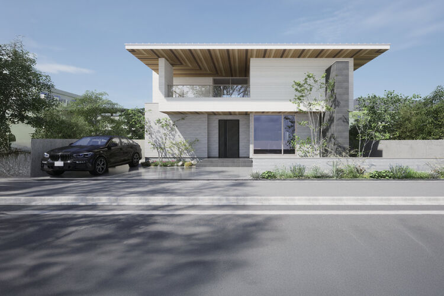
最高グレードKAON快温
最強木造 × 最高性能。
断熱も、気密も、耐震性も。
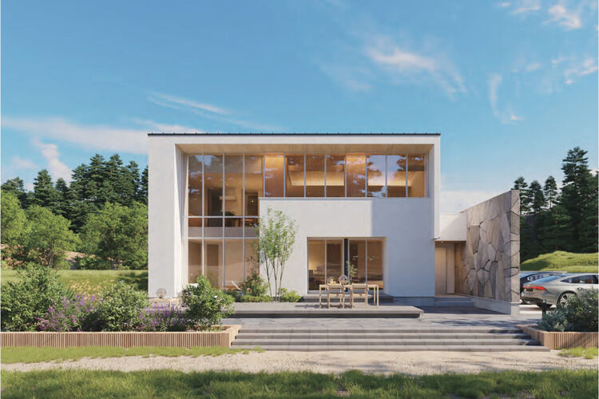
2階建てWAGO和剛
地震に勝ち続けられる家、
そして住み続けられる家。
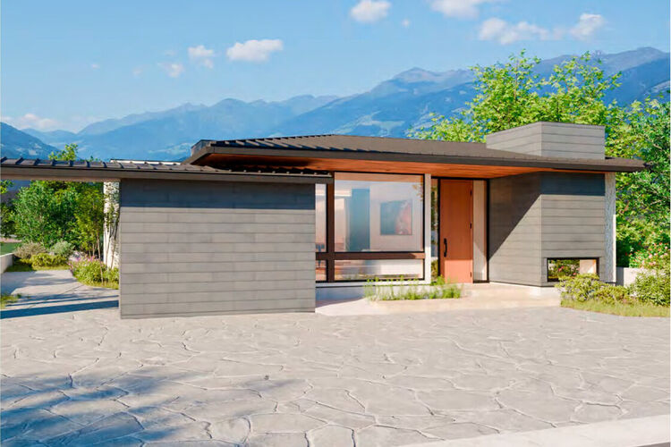
平屋ANJU
安心の平屋で叶える、
安住の暮らし。
※6地域における基準値。プランによりUA値は異なります。性能値は各商品カタログより。
EXPERIENCE
この強さを、
展示場・構造Lab.で体感。
ライフデザイン・カバヤの展示場では、CLTハイブリッド構法の住まいを
実際に見て、触れて、確かめられます。
さらに体感型ショールーム「構造Lab.」では、パネル展示や開発史、シアターなどを通じて、
その耐震性や断熱性を深く理解できます。
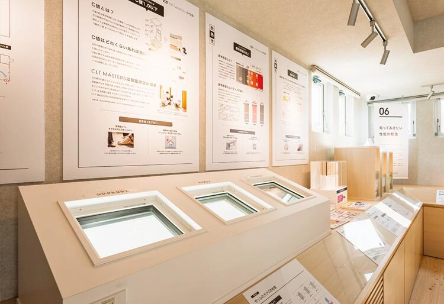
パネル展示
構法のしくみや性能を、実物と解説で分かりやすく。
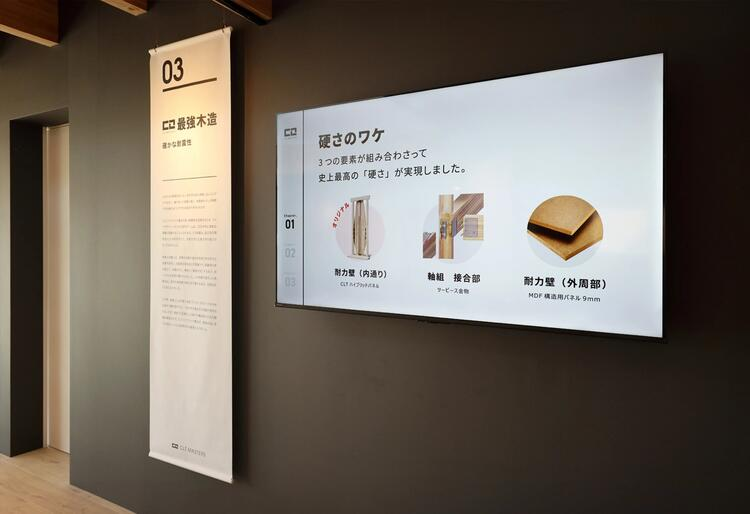
開発史
CLTハイブリッド構法が生まれるまでの歩みを紹介。
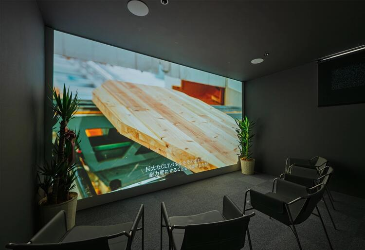
シアター
大きな映像で、構造の強さを体感。
GALLERY
構造Lab.の館内
CONSULTATION
こんなお悩み、
展示場でご相談ください
構造のしくみを実物で見ながら、
家づくりのことを何でもご相談いただけます。
RESERVE
各エリアの構造Lab.で、
実際に体感してみよう
CLTハイブリッド構法のしくみや強さは、各エリアの構造Lab.で実際に体感できます。
興味のある方は、お近くの構造Lab.の見学予約（無料）からお申し込みください。
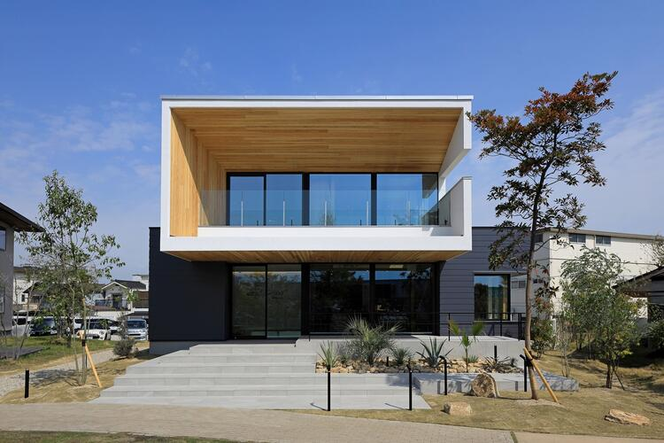
岡山南展示場 構造Lab.
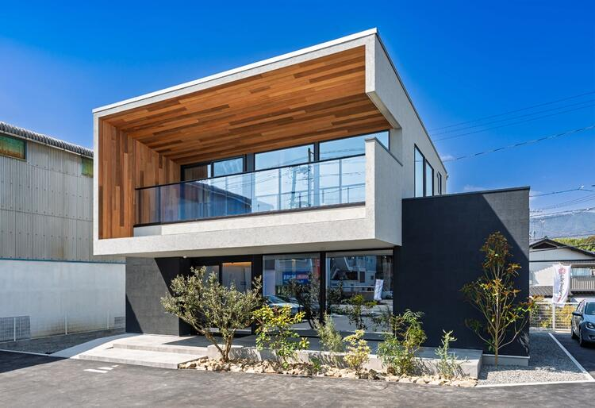
広島西展示場 構造Lab.
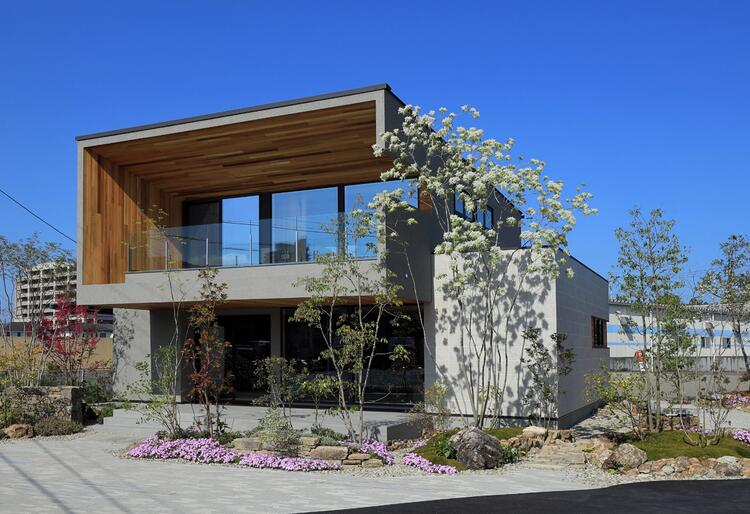
香川支店 構造Lab.
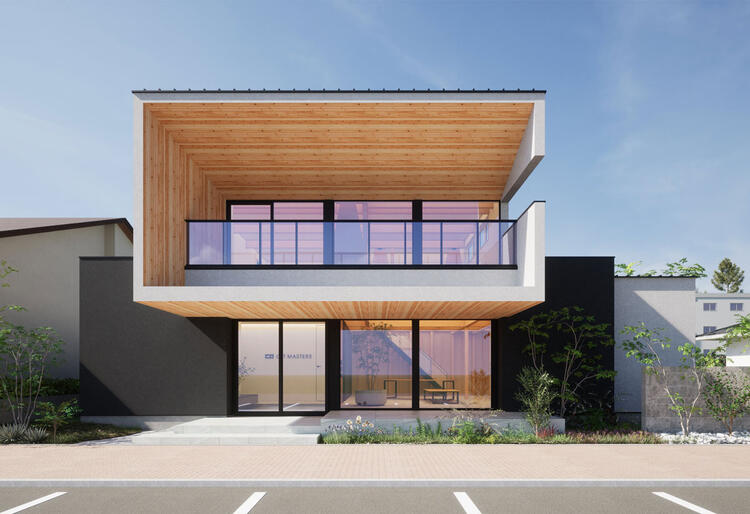
みどりまち展示場 構造Lab.
※写真は完成予想図です
12月OPEN予定このほか、岡山・広島・香川・愛媛・兵庫・福岡の各展示場、まちかどモデルハウスでもご見学・ご相談いただけます。
CLTハイブリッド構法の強さを、
各展示場でもご確認いただけます。